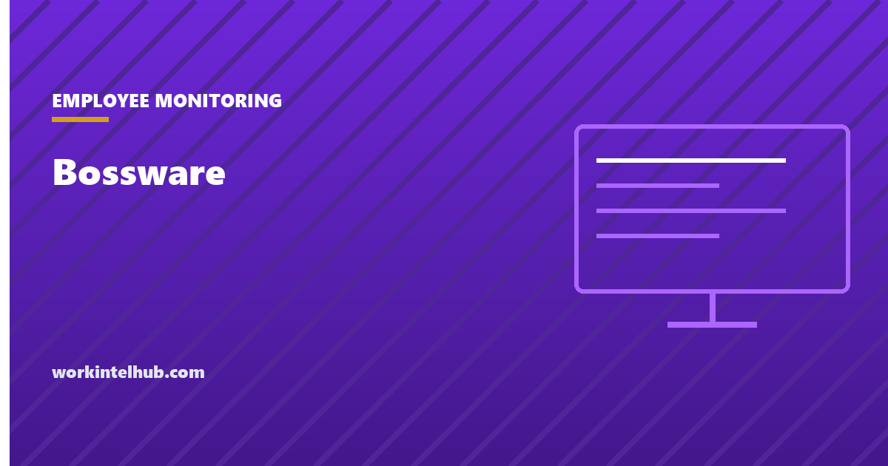

Bossware

Bossware is the informal name for software employers use to watch how employees work: screenshots, keystroke counts, app and website logs, idle timers, webcam checks and productivity scores. The word was popularised by digital rights groups during the 2020 shift to remote work, when sales of the software roughly doubled. It carries a judgment that the vendors' own names ("workforce analytics", "employee productivity monitoring") do not. The software itself is a range, from a time clock that records when you logged in to a tool that photographs your screen every few minutes. The difference between the two ends is the whole argument.
The checker below shows what the common configurations can and cannot see. The rest of the page sorts the software into five kinds, explains what each captures, sets out the US notice laws, and gives the practical guidance for employees who suspect it and employers who are considering it.
What can your setup see?
A general guide to what the common configurations allow, not a statement about your employer. The monitoring laws page covers each state in detail.
The five kinds
| Kind | What it captures | What it is for | Examples of the category |
|---|---|---|---|
| Time and attendance | Clock in and out, breaks, schedules | Payroll and overtime | Time clocks, timesheet apps |
| Activity and productivity monitoring | Active and idle time, apps and websites used, sometimes keystroke and mouse counts, productivity scores | Utilisation reporting; the "are remote staff working" question | The tools most people mean by bossware |
| Screen and content capture | Periodic screenshots or video, keystroke logging, clipboard | Investigations, regulated industries, data loss prevention | Covered in the screen monitoring and keystroke logging guides |
| Communications and data security | Email, chat and file access logs; alerts on sensitive data leaving | Security and compliance | Built into Microsoft 365 and Google Workspace; data loss prevention tools |
| Location and device management | GPS on company phones and vehicles, device inventory, remote wipe | Field work, fleet, asset control | Mobile device management; see GPS tracking |
The first and fourth kinds exist in nearly every company and are rarely controversial. The second and third are the controversy, and the Center for Democracy and Technology's research on them finds the harms concentrated where the data feeds automatic decisions: productivity scores that determine pay or discipline, idle timers that penalise thinking, and activity metrics that reward the appearance of work. The mouse jiggler is the employee-side response to that last one, and the fact that it exists is the best summary of the problem.
The law
Federal law permits monitoring of company systems with few limits. The Electronic Communications Privacy Act allows interception of communications on the employer's own system and with consent, and consent is usually obtained through the handbook. The constraints come from four other places.
Notice laws in New York (written notice at hire and a posted notice, since 2022), Connecticut (prior written notice of the types of monitoring) and Delaware (written or daily electronic notice before monitoring email or internet). Wiretap laws requiring all-party consent in about a dozen states, which make secretly recording calls or using a microphone unlawful. The National Labor Relations Act, under which the NLRB's Stericycle decision standard (2023) makes rules that could chill employees' discussion of working conditions presumptively unlawful. The NLRB General Counsel has said that intrusive monitoring can itself interfere with those rights. And privacy statutes: Illinois's biometric law, California's constitutional privacy right and the CCPA's access rights for employees, and a growing set of state laws on automated decisions.
Five practical rules follow. Monitor company systems, not personal ones. Tell people in writing what is monitored and why. Do not record audio or video without consent. Do not let an activity score make an employment decision on its own. Keep the data for as long as its purpose requires and no longer. The monitoring laws by state page has each state's rules, and the privacy line page the data that should never be collected whatever the law allows.
If you think it is on your computer
- Read the handbook and the acceptable use policy. Most employers disclose monitoring there, in general terms. In New York, Connecticut and Delaware you should have received a specific notice.
- Ask IT or HR directly, in writing. "What monitoring software runs on my device and what does it collect?" is a reasonable question, and the answer is informative either way. In California, a CCPA access request compels a list of the personal information collected.
- Check the device. The how to detect monitoring guide covers the management profiles, running processes and certificates that reveal it.
- Separate your lives. Personal accounts, personal browsing and personal messages on a personal device on a personal network. Everything on the company device or network should be assumed visible; the laptop location page answers the most common specific question.
- Do not defeat it. Jigglers, blockers and spoofing tools turn a privacy concern into a misconduct case. Raise the concern instead, together with colleagues if it is shared, which is protected activity.
If you are considering it
Start from the decision you need to make, not the data you could collect. Payroll needs clock times; security needs access logs; a manager who wants to know whether remote staff are working needs output measures, not screenshots, and the what to measure guide explains why activity metrics answer the wrong question. If monitoring is still justified, the ethical monitoring playbook sets out the design: proportionate collection, written notice, no automatic decisions, retention limits, and a review date. The policy template and consent form are the documents; the statistics page has the survey data on what employees think, which is the cost side of the decision.
Key takeaways
- Bossware is the informal name for employee monitoring software, from time clocks to screenshot tools; the controversy is about activity scoring and content capture, not attendance or security logs.
- Company devices and networks can see almost everything; personal devices on personal networks without installed software can see nothing.
- New York, Connecticut and Delaware require written notice; all-party consent states bar secret recording; the NLRB treats intrusive monitoring as a potential interference with protected activity.
- Employees: read the policy, ask in writing, check the device, separate personal from work, and do not defeat the software.
- Employers: start from the decision, prefer output measures, and if monitoring is justified give notice, avoid automatic decisions and set retention limits.
Frequently asked questions
What is bossware?
An informal term for software employers use to monitor employees' work: activity and idle time, app and website logs, keystroke and mouse counts, screenshots, productivity scores and sometimes webcam or location. It covers a range from ordinary time clocks and security logs to intrusive content capture, and the term is usually aimed at the latter.
Is bossware legal in the United States?
Monitoring company-owned systems is generally lawful, with notice requirements in New York, Connecticut and Delaware, all-party consent rules for audio recording in about a dozen states, limits under the National Labor Relations Act on monitoring that chills discussion of working conditions, and privacy laws in states such as Illinois and California. Monitoring personal devices and accounts without consent is not lawful.
Can my employer see what I do on my personal computer?
Not unless you have installed company software or a management profile on it, or you connect through the company network or VPN, which exposes websites visited. Work accounts such as company email and chat are visible to administrators from any device. Personal accounts on a personal device on a home network are not visible.
How can I tell if monitoring software is installed?
Check for a device management profile, unfamiliar processes that start at login, and company certificates in the browser; read the acceptable use policy; and ask IT in writing what runs on the device. The how to detect employee monitoring guide on this site walks through the checks for Windows and Mac.
Does an employer have to tell employees about monitoring?
In New York, Connecticut and Delaware, yes, in writing. Elsewhere there is no general notice statute, but most employers disclose it in the handbook because consent obtained there supports the lawfulness of the monitoring, and because undisclosed monitoring discovered later does more damage than disclosed monitoring ever did.
Should employers use productivity monitoring software?
Only if the decision they need to make requires it, and output measures usually answer the real question better than activity data. Where monitoring is justified, the design matters: proportionate collection, written notice, no automated employment decisions, retention limits and a review date. Activity scores used to rank or discipline people are the use the research links to harm.